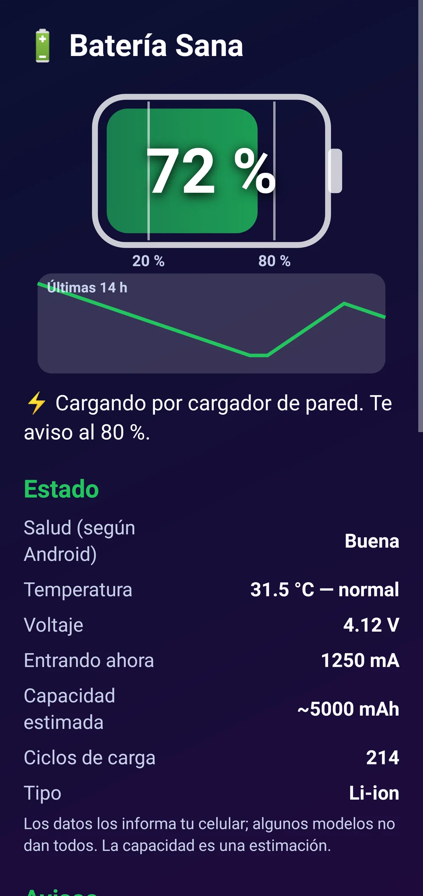
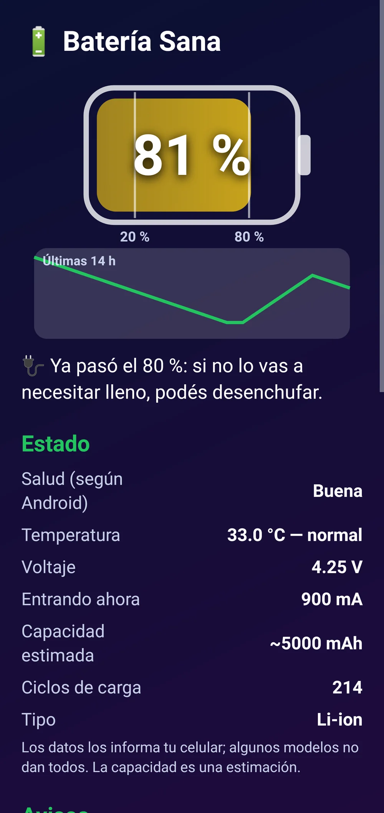
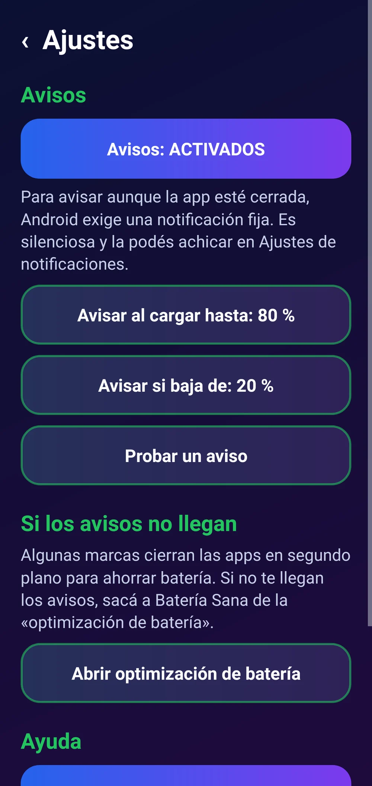
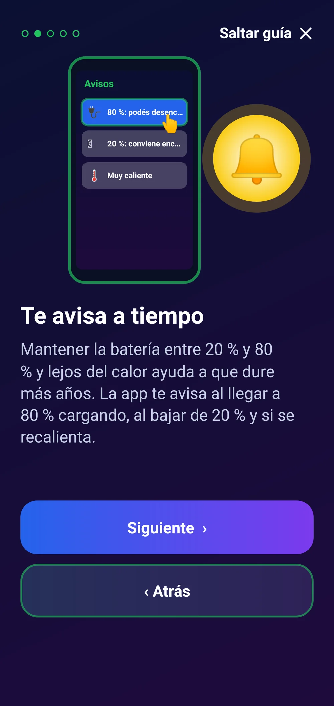
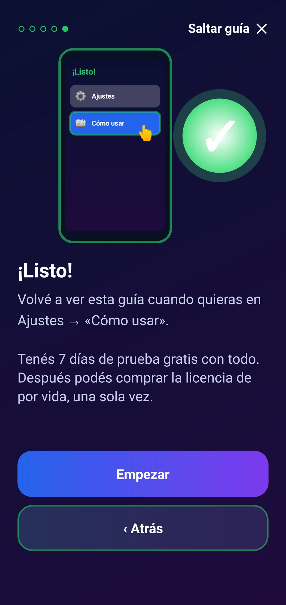

Batería Sana
Te avisa al 80 % cargando y al 20 %, muestra salud y temperatura, y da consejos simples.
Los avisos que tu cargador no te da: al 80 %, al 20 % y si se recalienta.
Límites de Android: ninguna app común puede medir el consumo exacto de cada app ni cortar la carga; los datos de salud, ciclos y temperatura los informa cada celular y algunos no los dan. Para avisar con la app cerrada usa una notificación fija y silenciosa, que Android exige.
Para celulares Android 9 o más nuevos.
 Cuidá tu batería sin pensar
Cuidá tu batería sin pensar

Estado claro y gráfico

Llegó al 80 %: podés desenchufar

Elegí cuándo avisar

Te avisa a tiempo

Qué apps usás másLo que la hace distinta
- 🔌 Te avisa al 80 % para desenchufar a tiempo.
- 🪫 Y antes de quedarte sin batería.
- 🌡️ Vigila la temperatura, lo que más la desgasta.
- 📊 Gráfico de las últimas horas, guardado sólo en tu celular.
- 🙌 Honesta: te dice lo que Android no deja medir.
- 💬 Consejos simples, sin palabras técnicas.
Qué es
Batería Sana te ayuda a que la batería dure más años: te avisa cuando cargando llega al 80 % (para desenchufar), cuando baja del 20 % y si se recalienta. Muestra en grande el porcentaje, la temperatura, la salud que informa Android, el voltaje y un gráfico de las últimas horas. Con «Acceso de uso» te muestra qué apps usaste más, y te da consejos simples. Honesta con los límites: Android no deja medir el consumo exacto de cada app.
Qué hace
- Te avisa con una notificación cuando, cargando, llega al 80 % (o el número que elijas), cuando baja del 20 % y si la batería pasa los 45 °C. Un aviso por vez, sin molestar.
- Muestra el porcentaje en grande, la temperatura, la salud que informa Android, el voltaje, la corriente, la capacidad estimada y, en Android 14, los ciclos de carga (si el celular los informa).
- Guarda un historial chico en tu celular y dibuja un gráfico de las últimas horas.
- Con «Acceso de uso» te muestra las apps que más usaste en las últimas 24 h (tiempo en pantalla) y te lleva a la pantalla de consumo de Android.
- Consejos simples: rango 20–80 %, evitar el calor, cargadores de calidad y la carga adaptable del sistema.
Requisitos
- Celular Android 9 o más nuevo
- Permiso de notificaciones (para los avisos)
- «Acceso de uso»: opcional
Funciones
- Aviso al 80 % cargando (configurable 75–90 %)
- Aviso al bajar del 20 % (configurable 15–30 %)
- Aviso si la batería se recalienta
- Porcentaje, temperatura, salud, voltaje y corriente
- Gráfico de las últimas horas
- Apps que más usaste (tiempo en pantalla)
- Consejos simples y honestos
Cómo se instala
- Descargá el APK e instalalo (si Android pregunta, permití instalar desde el navegador).
- Seguí la guía: permití notificaciones y, si querés, «Acceso de uso».
- Si no te llegan los avisos, sacala de la «optimización de batería» (Ajustes de la app). Para comprar: «Activar» → «Comprar con Mercado Pago».
Novedades
- 1.0.0 — Primera versión.